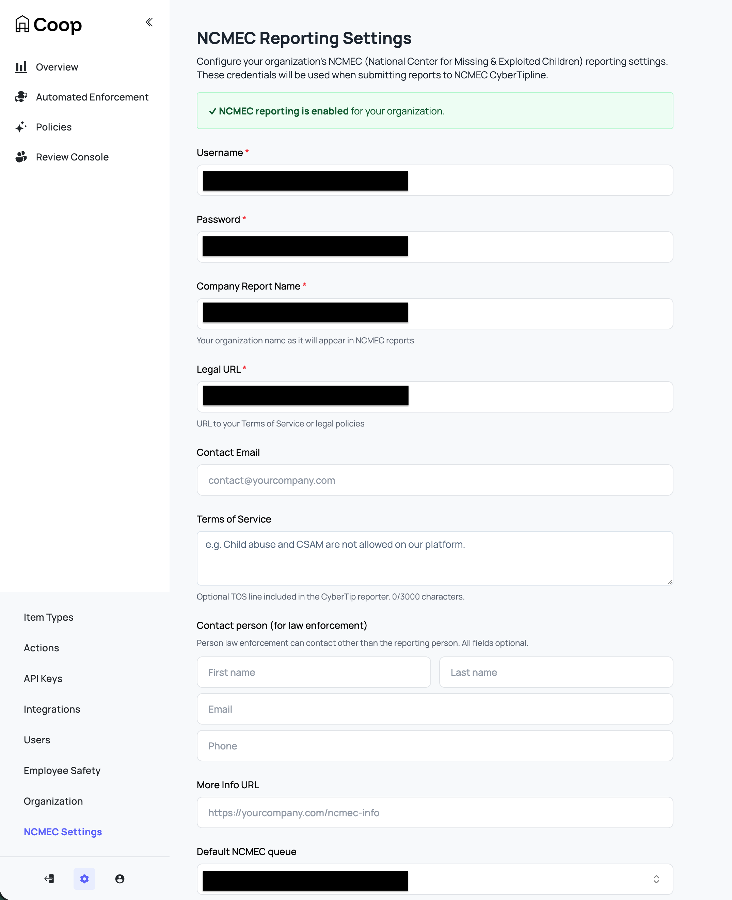

NCMEC CyberTipline
Coop is integrated with the CyberTipline Reporting API from the National Center for Missing and Exploited Children (NCMEC). Coop handles the full lifecycle: detecting known CSAM via hash matching or AI-based rules, routing content to a dedicated NCMEC manual review queue, and submitting CyberTips with the relevant metadata.
For the moderator review workflow, see Child Safety Reporting.
Requirements
Before you can review and report content to NCMEC, you must have the following:
-
NCMEC Electronic Service Provider (ESP) registration and approval.
-
CyberTipline API credentials: username and password from NCMEC to submit reports to the CyberTipline API.
-
“User” ItemType with a
creatorIdfield: NCMEC jobs are centered on a user, not individual pieces of content. Coop extracts the user from a content item via acreatorIdfield (aRELATED_ITEMfield referencing the User Item Type), then aggregates all media associated with that user into a single NCMEC review job. -
Dedicated NCMEC manual review queue for Coop to route jobs to. Whether decisions made from this queue submit real CyberTips or go to NCMEC’s sandbox is controlled by the
NCMEC_ENVenvironment variable on the Coop server; see Test vs. Production Submissions. -
Additional Info endpoint (optional, but strongly recommended): a webhook Coop calls before submitting a CyberTip to fetch enriched metadata: email addresses, screen names, IP capture events, and per-media details. Without this, Coop submits the CyberTip with only the user ID and basic information from the Item data.
-
Preservation endpoint (optional): a webhook Coop calls after a successful CyberTip submission so your platform can preserve relevant user data per NCMEC requirements. Note that Coop does not come with built-in preservation functionalities; it will simply use the provided endpoint if configured.
-
NCMEC org settings configured with the above via Settings → NCMEC in Coop. See NCMEC Settings below for details.
Hash Matching (HMA)
To automatically detect known CSAM via hash matching, you need Hash Sharing API credentials from NCMEC. Configure in HMA’s curator UI or via TX_NCMEC_CREDENTIALS env var on the HMA service.
See the Hasher-Matcher-Actioner (HMA) integration for details.
NCMEC settings
Configure NCMEC reporting under Settings → NCMEC Settings.

| Setting | Description |
|---|---|
| Username | Your NCMEC CyberTipline API username. |
| Password | Your NCMEC CyberTipline API password. |
| Company Report Name | Your organization name as it appears in NCMEC reports. This value is also sent as the ESP service name for the reported user in each CyberTip. |
| Legal URL | URL to your Terms of Service or legal policies (e.g. https://yourcompany.com/terms). |
| Contact Email | Email for the reporting person on the CyberTip. The XML receipt from NCMEC can serve as the ESP notification. |
| Terms of Service | TOS text or URL to an acceptable use policy relevant to the incident being reported. Maximum 3000 characters. |
| Contact Person (for law enforcement) | A contact person law enforcement can reach (other than the reporting contact email): first name, last name, email, phone. |
| More Info URL | URL for additional information about your reporting process (e.g. https://yourcompany.com/ncmec-info). Used as the web page URL when “Default internet detail type” is set to “Web page.” |
| Default NCMEC Queue | When reviewers click “Enqueue to NCMEC,” jobs are sent to this queue. Leave as “Use org default queue” to fall back to the organization’s default queue. |
| Default Internet Detail Type | The incident context (channel/medium) included in every CyberTip: Web page, Email, Newsgroup, Chat/IM, Online gaming, Cell phone, Non-internet, or Peer-to-peer. |
| NCMEC Additional Info Endpoint | Webhook URL Coop calls before submitting a CyberTip to fetch enriched user and media metadata. See Additional Info Endpoint below. Strongly recommended as without it, CyberTips are submitted with minimal user data. |
| NCMEC Preservation Endpoint | Webhook URL Coop calls after a successful CyberTip submission with the report ID. See Preservation Endpoint below. |
Saving credentials, Company Report Name, and Legal URL enables NCMEC reporting for the organization. The remaining fields are not required to submit a CyberTip, but filling them out makes reports significantly more actionable for NCMEC investigators.
Routing content to NCMEC
Content is routed to the NCMEC queue through three automatic detection paths and one manual path. For the manual escalation workflow and an explanation of how jobs are aggregated once content is enqueued, see the Child Safety (NCMEC) user docs.
1. Hash-matching known CSAM (HMA)
Coop integrates with Meta’s Hasher-Matcher-Actioner (HMA) to match uploaded media against NCMEC’s database of known CSAM hashes. This is the most reliable detection path: a hash match is a strong signal that content is confirmed CSAM.
HMA syncs hashes from NCMEC via NCMEC’s Hash Sharing API, which gives you local access to NCMEC’s database of image and video fingerprints for known CSAM for fast matching.
See the Hasher-Matcher-Actioner (HMA) integration for details.
2. Novel CSAM detection (Content Safety API)
For content that hasn’t been seen before and therefore has no known hash, Coop integrates with Google’s Content Safety API that classifies images for potential CSAM. You can configure a Routing Rule using a Content Safety signal to route high-confidence detections directly to the NCMEC queue, or to a triage queue for human review before escalation.
See Google Content Safety API for integration details.
3. Inbound report flagged as CSAM
When your platform sends a user report to Coop’s Report API with reportedForReason.csam: true, Coop automatically routes it to the NCMEC queue instead of the default review queue. These reasons should be configured by your reporting flow and match whatever reporting reasons you have defined.
{
"reporter": { "id": "user123", "typeId": "user-type-id" },
"reportedAt": "2025-01-01T00:00:00Z",
"reportedItem": {
"id": "content456",
"typeId": "post-type-id",
"data": { ... }
},
"reportedForReason": {
"csam": true
}
}
4. Manual escalation
In any review job, moderators with NCMEC access can select Enqueue to NCMEC from the action list. This immediately moves the job to the NCMEC queue.
CyberTip submission flow
When a reviewer submits a CyberTip, Coop performs the following steps:
-
Fetch additional info: Coop calls your Additional Info endpoint to retrieve enriched metadata: user email, screen name, IP capture events, and per-media details.
-
Build the CyberTip XML: Coop assembles the full report:
-
escalateToHighPriority: this is a boolean that marks the report as high priority (ie. there is abuse happening now) that NCMEC prioritizes when triaging.
-
Incident summary: the incident type selected by the reviewer, and the timestamp of the most recently created media item as the
incidentDateTime. -
Internet details: the channel or medium of the incident (e.g. Web page, Chat/IM, Email), set via the “Default Internet Detail Type” in NCMEC org settings.
-
Reporter: your organization’s name (
companyTemplate), legal URL, contact email, optional terms of service language, and optional law enforcement contact person. All sourced from NCMEC org settings. -
Reported user (
personOrUserReported): the suspected perpetrator. Coop includes:espIdentifier: the user’s internal platform IDespService: your organization’s name (fromcompanyTemplate)screenName: the user’s username, from your Additional Info endpointdisplayName: the user’s display name, if availableemail: known email addresses for the user, from your Additional Info endpointipCaptureEvent: IP addresses associated with the user (e.g. login, upload events), from your Additional Info endpoint. Providing IP data significantly improves NCMEC’s ability to identify and locate the suspect. If the user item’s item type maps theipAddressschema field role, that IP is also appended as anUnknownevent at the report’s incident time.
-
Victim: if a child victim is identifiable (e.g. from a messaging context), Coop includes their
espIdentifier,screenName,displayName, andipCaptureEvent. This helps NCMEC locate and provide assistance to the victim.
-
-
Submit the report: Coop POSTs the report XML to the NCMEC CyberTipline API and receives a
reportId. -
Upload media: For each media item, Coop downloads the file from its URL and uploads it to NCMEC with full file metadata:
- Industry classification (A1/A2/B1/B2)
- File annotations (labels selected by the reviewer)
- IP capture events associated with the upload. If the media item’s item type maps the
ipAddressschema field role, that IP is also appended as anUploadevent at the media’screatedAt. - Whether the content was publicly available on your platform (
publiclyAvailable) - Whether the ESP viewed the file and its EXIF data (
fileViewedByEsp: true,exifViewedByEsp: true) - File hash, if provided by your Additional Info endpoint
-
Upload supplemental files: Any additional files returned by your Additional Info endpoint (e.g. screenshots, supporting evidence) are uploaded to NCMEC as supplemental reported files.
-
Upload message threads: If the user was reported in a messaging context, Coop generates a CSV for each conversation thread and uploads it to NCMEC.
-
Finalize the report: Coop calls the NCMEC
/finishendpoint to complete the submission. -
Store the report: The completed report (report ID, XML, all media details) is saved in Coop’s database.
-
Send a preservation request: If your org has a Preservation endpoint configured, Coop calls it with the report ID so you can preserve relevant user data.
Test vs. production submissions
Coop routes every CyberTip submission to one of two NCMEC endpoints determined by the NCMEC_ENV environment variable on the Coop server:
-
Unset, or any value other than
production: NCMEC test endpoint where reports are discarded by NCMEC. Safe default used for integration testing. -
NCMEC_ENV=production: NCMEC production endpoint, where reports are investigated and i.e. routed to law enforcement.
Operators are responsible for ensuring NCMEC_ENV matches the credentials they have configured in Settings → NCMEC. NCMEC issues separate test and production credentials, and submitting from an unapproved integration to the production endpoint can result in your credentials being revoked.
Reports submitted against the test endpoint are stored in Coop’s database with an is_test flag and are only visible in the NCMEC Reports dashboard to the reviewer who submitted them. Production reports are visible to anyone in the org with the VIEW_CHILD_SAFETY_DATA permission.
Webhooks
Additional Info endpoint
Coop calls this webhook before building a CyberTip to retrieve enriched metadata for the reported user and their media. This endpoint is optional but strongly recommended since without it, Coop submits the CyberTip with only the user’s ID and whatever data was already sent to Coop via the Items API.
Coop signs every request with your org’s signing key. Verify the signature before processing.
Request
{
"users": [{ "id": "string", "typeId": "string" }],
"media": [{ "id": "string", "typeId": "string" }]
}
Response
{
"users": [
{
"id": "string",
"typeId": "string",
"screenName": "string",
"email": [
{
"email": "user@example.com",
"type": "Home",
"verified": true,
"verificationDate": "2025-01-01T00:00:00Z"
}
],
"ipCaptureEvent": [
{
"ipAddress": "192.0.2.1",
"eventName": "Upload",
"dateTime": "2025-01-01T00:00:00Z",
"possibleProxy": false,
"port": 443
}
],
"data": {}
}
],
"media": [
{
"id": "string",
"typeId": "string",
"missing": false,
"publiclyAvailable": true,
"fileName": "image.jpg",
"additionalInfo": ["string"],
"ipCaptureEvent": [
{
"ipAddress": "192.0.2.1",
"eventName": "Upload",
"dateTime": "2025-01-01T00:00:00Z",
"possibleProxy": false,
"port": 443
}
],
"fileDetails": {
"hash": "abee9985862d273160d930d2ac6ddb2cc33c74e73c702bcc8183d235f6f9685a",
"hashType": "PDQ"
}
}
],
"additionalFiles": [
{
"fileUrl": "https://yourplatform.com/evidence/file.pdf",
"fileName": "evidence.pdf",
"additionalInfo": ["Supporting evidence"]
}
],
"messages": [
{ "id": "string", "typeId": "string", "ipAddress": "192.0.2.1" }
],
"additionalInfo": "string"
}
Response fields
| Field | Type | Description |
|---|---|---|
users | Array | Must include an entry for every user in the request. |
users.id | String | Must match the id from the request. |
users.typeId | String | Must match the typeId from the request. |
users.screenName | String | The user’s screen name or username on your platform. |
users.email | Array | Known email addresses for the user. type may be Business, Home, or Work. |
users.ipCaptureEvent | Array | IP events associated with the user (e.g. logins, registrations). eventName may be Login, Registration, Purchase, Upload, Other, or Unknown. Coop also appends the user item’s ipAddress field role (when mapped) as an Unknown event at the report’s incident time. |
users.data | Object | Raw item data for the user. |
media | Array | Must include an entry for every media item in the request if present. |
media.id | String | Must match the id from the request. |
media.typeId | String | Must match the typeId from the request. |
media.missing | Boolean | Set to true if the media is no longer available. If all media items are missing: true, no CyberTip is filed. |
media.publiclyAvailable | Boolean | Whether the media was publicly accessible on your platform at the time of reporting. |
media.fileName | String | Original filename of the media. |
media.additionalInfo | Array<String> | Additional context about the media to include in the NCMEC file details. |
media.ipCaptureEvent | Array | IP events associated with this media item. Coop also appends the media item’s ipAddress field role (when mapped) as an Upload event at the media’s createdAt. |
media.fileDetails | Object | Hash information for the file: { hash, hashType }. |
additionalFiles | Array | Extra files to upload to NCMEC as supplemental evidence (e.g. screenshots). |
messages | Array | Message-level IP address data for conversation thread context. |
additionalInfo | String | Top-level freeform additional information to include in the report. |
Important
If the response does not include an entry for every user and media item in the request, Coop will throw an error and not submit the CyberTip. Your endpoint must return a response entry for each requested user and media item. If all media items have
missing: true, Coop will not file the CyberTip. The job will be marked as a permanent error and will not be retried.
Preservation endpoint
Platforms that submit CyberTips may have data preservation obligations under laws like 18 U.S.C. § 2258A and the REPORT Act (2024), which extended content retention requirements to one year. Talk to your legal team to understand your organization’s specific obligations.
Coop calls a preservation endpoint you build and host immediately after a CyberTip is successfully submitted. Your endpoint should trigger whatever internal workflow handles data retention, for example flagging the account for legal hold, snapshotting relevant records, or notifying your legal team. Coop passes the reported user, the media included in the CyberTip, and the NCMEC-assigned report ID so you have everything you need to identify what to retain.
Coop signs every request with your org’s signing key. Verify the signature before processing.
Request
{
"user": { "id": "string", "typeId": "string" },
"reportedMedia": [{ "id": "string", "typeId": "string" }],
"reportId": "string"
}
| Field | Description |
|---|---|
user | The user who was reported to NCMEC. |
reportedMedia | All media items that were included in the CyberTip. |
reportId | The NCMEC-assigned CyberTip report ID. |
Coop only checks for a successful HTTP status code. The response body is ignored. This webhook is only called for production (non-test) CyberTip submissions.
Retry behavior
If a CyberTip submission fails (e.g. due to a transient network error or NCMEC API outage), Coop automatically retries the submission. A background job runs periodically and retries any failed NCMEC decisions that:
- Have not already been successfully submitted (no matching report in the database)
- Have fewer than 10 prior retry attempts
- Are not marked as a permanent error (e.g. all media missing)
- Were decided within the past 30 days